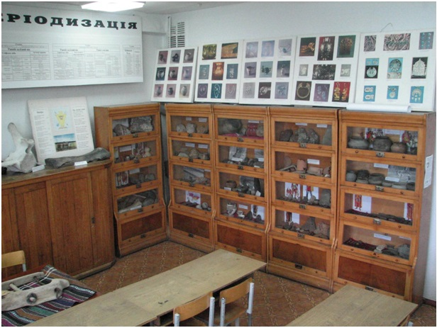

Музей сьогодні
Черкаський археологічний музей Середньої Наддніпрянщини Черкаського національного університету ім. Богдана Хмельницького засновано 1 березня 2000 року. Відкриття музею відбулось 1 березня 2001 року.
Директор музею – Сиволап Михайло Павлович (на громадських засадах); лаборант (на громадських засадах) – Марченко Олександр Васильович.
Діяльність Черкаського археологічного музею Середньої Наддніпрянщини направлена на вивчення і популяризацію минулого краю, розвиток у студентів-істориків відповідних професійних знань і навиків та виховання їх у дусі патріотизму і любові до рідного краю. Територія Середньої Наддніпрянщини, і Черкащини зокрема, неодноразово протягом тисячоліть відігравала важливу роль в історичних і етногенетичних процесах як національного, так і світового масштабу, тому вона так багата на пам’ятки минулого, які необхідно зберегти, дослідити і донести, як до фахівців, так і до широкого загалу.
Основна колекція музею, археологічна, нараховує понад 30 тис. знахідок і висвітлює історію нашого краю від появи на його території перших людей – неандертальців (130-100 тис. р. тому) і до кінця ХІХ – початку ХХ ст. (матеріали з розкопок хати Івана Піддубного), охоплюючи усі без винятку епохи.
Наша мета – подальша комплектація фондів, систематизація, опис, реставрація, вивчення і публікація фондових матеріалів із задіянням на всіх етапах студентів університету, що дозволить їм освоїти ази камеральних робіт і лабораторного археологічного дослідження, фондової, реставраційної і експозиційної музейної роботи.
Сайт музею функціонує з 1 травня 2014 року. Задачею віртуального музею є популяризація стародавньої історії краю, а також сприяння охороні рухомих і нерухомих пам’яток історії та археології, надання науково-методичної допомоги установам, що займаються збереженням об’єктів національної спадщини, обміну досвідом і думками з колегами.
Фрагмент другого варіанту археологічної експозиції музею (2009р.).
Черкаський археологічний музей Середньої Наддніпрянщини Черкаського національного університету ім. Богдана Хмельницького прийме матеріальну допомогу від усіх організацій, установ, фізичних і приватних осіб, котрі виявлять подібне бажання. Також із задоволенням прийме до своєї бібіліотеки фахову літературу, каталоги, комп’ютерні матеріали, до археологічної лабораторії – оргтехнику, реставраційне і лабораторне обладнання та витратні матеріали. Прийме в дар як окремі експонати так і цілі колекції: археологічні, палеонтологічні, етнографічні, нумізматичні і боністичні. Музей також прийме допомогу у вигляді послуг, перевезення експонатів (особливо, великовагових) і сприяння у проведенні досліджень, як кабінетних, так і польових (зокрема, автомобільне паливо, продукти і спорядження).
Будемо вдячні за доповнення розміщеної на сайті інформації чи виявлені неточності. Благодійний переказ можна здійснити на розрахунковий рахунок університету: